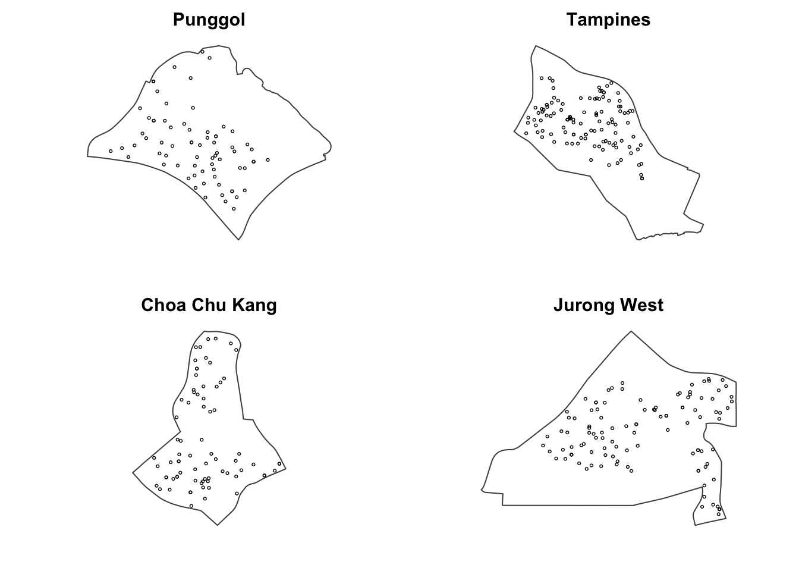

pacman::p_load(sf, spatstat, tmap, tidyverse)Hands-on Exercise 2a
5 2nd Order Spatial Point Patterns Analysis Methods
5.1 Overview
Second-order SPPA studies interpoint relationships—how the presence of one point affects others—across spatial scales. It goes beyond first-order intensity (overall density) to test for clustering, dispersion, or randomness.
Goal of the exercise: use spatstat to investigate the spatial point process of childcare centres in Singapore.
Key questions:
Are childcare centres consistent with CSR (complete spatial randomness)?
If not, where (and at what scales) do higher concentrations occur?
5.2 The data
To provide answers to the questions above, two data sets will be used. They are:
Child Care Services data from data.gov.sg, a point feature data providing both location and attribute information of childcare centres.
Master Plan 2019 Subzone Boundary (No Sea), a polygon feature data providing information of URA 2019 Master Plan Planning Subzone boundary data.
Both data sets are available at Singapore’s open data portal. They are provided in kml and geojson format. Students are free to download their preferred data format.
5.3 Installing and Loading the R packages
sf — Core toolkit for importing, managing, and processing vector geospatial data in R.
spatstat — Functions for spatial point pattern analysis (1st/2nd order) and KDE surface creation.
tmap — Makes cartographic-quality maps (static or interactive via Leaflet).
tidyverse — Integrated suite for data wrangling, analysis, and visualization with consistent grammar and data structures.
5.4 Data Import and Preparation
Geospatial Data wrangling for preparing geospatial data in ppp object class required by spatstat package.
mpsz_cl <- read_rds("data/mpsz_cl.rds") # cleaned subzones (sf, EPSG:3414)
childcare_sf <- read_rds("data/childcare_sf.rds") # childcare points (sf, EPSG:3414)
# 2) Ensure same CRS
stopifnot(st_crs(mpsz_cl) == st_crs(childcare_sf))
# 3) Create study window (owin) from subzone polygon
# Use the unioned boundary to define the analysis region
sg_owin <- as.owin(st_union(mpsz_cl)) # owin window for spatstat
# 4) Build ppp from childcare sf points
coords <- st_coordinates(childcare_sf) # extract x/y in meters
childcare_ppp <- ppp(x = coords[,1],
y = coords[,2],
window = sg_owin,
checkdup = FALSE)
# 5) (Optional) Rescale to kilometers for bandwidth/KDE convenience
childcare_ppp_km <- rescale(childcare_ppp, s = 1000, unitname = "km")
# 6) Quick sanity checks
summary(childcare_ppp_km) # should show marks=NULL, window=owin, unit=kmPlanar point pattern: 1925 points
Average intensity 2.875208 points per square km
*Pattern contains duplicated points*
Coordinates are given to 14 decimal places
Window: polygonal boundary
50 separate polygons (35 holes)
vertices area relative.area
polygon 1 14044 6.67892e+02 9.98e-01
polygon 2 285 1.61128e+00 2.41e-03
polygon 3 27 1.50315e-02 2.25e-05
polygon 4 (hole) 41 -4.01660e-02 -6.00e-05
polygon 5 (hole) 317 -5.11280e-02 -7.64e-05
polygon 6 (hole) 3 -4.14100e-10 -6.19e-13
polygon 7 30 2.80002e-02 4.18e-05
polygon 8 (hole) 4 -2.86396e-07 -4.28e-10
polygon 9 (hole) 3 -1.81440e-10 -2.71e-13
polygon 10 (hole) 3 -8.68789e-10 -1.30e-12
polygon 11 (hole) 3 -5.99531e-10 -8.95e-13
polygon 12 (hole) 3 -3.04560e-10 -4.55e-13
polygon 13 (hole) 3 -4.46108e-10 -6.66e-13
polygon 14 (hole) 3 -3.39815e-10 -5.08e-13
polygon 15 (hole) 3 -4.52041e-11 -6.75e-14
polygon 16 (hole) 3 -3.90173e-11 -5.83e-14
polygon 17 (hole) 3 -9.59845e-11 -1.43e-13
polygon 18 (hole) 4 -2.54488e-10 -3.80e-13
polygon 19 (hole) 4 -4.28453e-07 -6.40e-10
polygon 20 (hole) 4 -2.18619e-10 -3.27e-13
polygon 21 (hole) 5 -2.44408e-10 -3.65e-13
polygon 22 (hole) 5 -3.64686e-08 -5.45e-11
polygon 23 71 8.18750e-03 1.22e-05
polygon 24 (hole) 6 -8.37554e-07 -1.25e-09
polygon 25 (hole) 38 -7.79904e-03 -1.16e-05
polygon 26 (hole) 3 -3.41897e-11 -5.11e-14
polygon 27 (hole) 3 -3.65499e-09 -5.46e-12
polygon 28 (hole) 3 -4.95057e-08 -7.39e-11
polygon 29 91 1.49663e-02 2.24e-05
polygon 30 (hole) 5 -2.92235e-10 -4.36e-13
polygon 31 (hole) 3 -7.43615e-12 -1.11e-14
polygon 32 (hole) 270 -1.21455e-03 -1.81e-06
polygon 33 (hole) 19 -4.39650e-06 -6.57e-09
polygon 34 (hole) 35 -1.38385e-04 -2.07e-07
polygon 35 (hole) 23 -1.99656e-05 -2.98e-08
polygon 36 40 1.38607e-02 2.07e-05
polygon 37 (hole) 41 -6.00381e-03 -8.97e-06
polygon 38 (hole) 7 -1.40546e-07 -2.10e-10
polygon 39 (hole) 11 -8.36705e-05 -1.25e-07
polygon 40 (hole) 3 -2.33435e-09 -3.49e-12
polygon 41 45 2.51218e-03 3.75e-06
polygon 42 139 3.22293e-03 4.81e-06
polygon 43 148 3.10395e-03 4.64e-06
polygon 44 (hole) 4 -1.72650e-10 -2.58e-13
polygon 45 75 1.73526e-02 2.59e-05
polygon 46 83 5.28920e-03 7.90e-06
polygon 47 106 3.04104e-03 4.54e-06
polygon 48 71 5.63061e-03 8.41e-06
polygon 49 10 1.99717e-04 2.98e-07
polygon 50 (hole) 3 -1.37223e-08 -2.05e-11
enclosing rectangle: [2.66754, 55.94194] x [21.44847, 50.25633] km
(53.27 x 28.81 km)
Window area = 669.517 square km
Unit of length: 1 km
Fraction of frame area: 0.436# 1) Extract target planning areas (sf)
pg <- mpsz_cl %>% filter(PLN_AREA_N == "PUNGGOL")
tm <- mpsz_cl %>% filter(PLN_AREA_N == "TAMPINES")
ck <- mpsz_cl %>% filter(PLN_AREA_N == "CHOA CHU KANG")
jw <- mpsz_cl %>% filter(PLN_AREA_N == "JURONG WEST")
# 2) Convert sf polygons to spatstat windows (owin)
pg_owin <- as.owin(pg)
tm_owin <- as.owin(tm)
ck_owin <- as.owin(ck)
jw_owin <- as.owin(jw)
# 3) Subset the childcare ppp by each window (meters)
childcare_pg_ppp <- childcare_ppp[pg_owin]
childcare_tm_ppp <- childcare_ppp[tm_owin]
childcare_ck_ppp <- childcare_ppp[ck_owin]
childcare_jw_ppp <- childcare_ppp[jw_owin]
# 4) Rescale to kilometres (for readable bandwidth/units)
childcare_pg_ppp.km <- rescale.ppp(childcare_pg_ppp, 1000, "km")
childcare_tm_ppp.km <- rescale.ppp(childcare_tm_ppp, 1000, "km")
childcare_ck_ppp.km <- rescale.ppp(childcare_ck_ppp, 1000, "km")
childcare_jw_ppp.km <- rescale.ppp(childcare_jw_ppp, 1000, "km")# 5) Helper: draw a panel (white window + black points)
panel_ppp <- function(ppp_obj, title) {
plot(Window(ppp_obj), col = "white", border = "grey30",
main = title, axes = FALSE)
plot(unmark(ppp_obj), add = TRUE,
pch = 1, cex = 0.4, col = "black", lwd = 0.7)
}
# 6) 2×2 plot on screen
par(mfrow = c(2, 2), mar = c(2, 2, 2, 1), cex.main = 1.15)
panel_ppp(childcare_pg_ppp.km, "Punggol")
panel_ppp(childcare_tm_ppp.km, "Tampines")
panel_ppp(childcare_ck_ppp.km, "Choa Chu Kang")
panel_ppp(childcare_jw_ppp.km, "Jurong West")